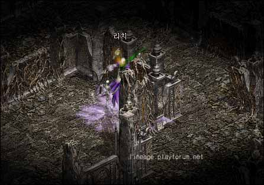

|
2003年1月2日
新首領巫妖初體驗
來源：Lineage Playforum
英文翻譯：Lineage Compendium

Lineage Playforum報告了玩家Bopvqod，首名在韓國測試伺服器上見過新首領巫妖(Lich)及生存的人。
當他看見巫妖時為43級-63防，但這並不是故事的開始，他在一開始時為47級，而前往找尋巫妖的途中令他跌了四個等級！他在打怪的途中得到了三個傳送往傲慢塔六樓的卷軸，可惜每一次都是死亡收場。最後，他用500K金幣買了第四個卷軸，同時亦能成功前往十樓。
在十樓上，那裡有龍谷的高骨及骨龍，他利用隨傳的方法不停地傳送直至他看到巫妖為止。他帶了170白水，而最後用了136白水便成功殺死了巫妖。巫妖的第一次攻擊大約損200血。那位玩家的裝備為+9瑟劍及2隻+10魔防的戒指。巫妖掉下了祝防，祝武，金屬盔甲，武士刀及雙手劍。他覺得巫妖的掉下物與巴列斯相似，而實力就像思巴克女皇（當然是一隻不容易死的思巴克女皇）。
他覺得傲慢塔太多一下死/秒殺的怪物，他覺得加強他們的實力較秒殺為好。同時他亦覺得魔狼是最強的秒殺玩家怪物。
韓國測試伺服器12月30日更新內容
原文：Lineage Playforum
英文翻譯：Lineage Compendium
1. 膠質怪(Gelatinous Cube)不會使用的其中一種會秒殺的遠距離攻擊。
2. 傳送回家的卷軸現在會傳送往玩家登記成為居民的城鎮。
3. 修正了亞丁城及碼頭的地圖錯誤。 |